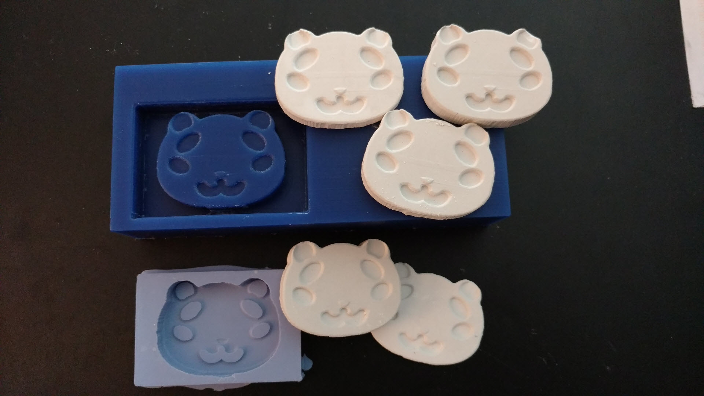
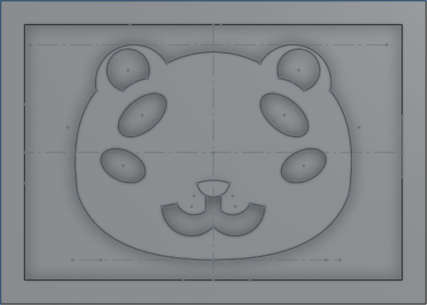
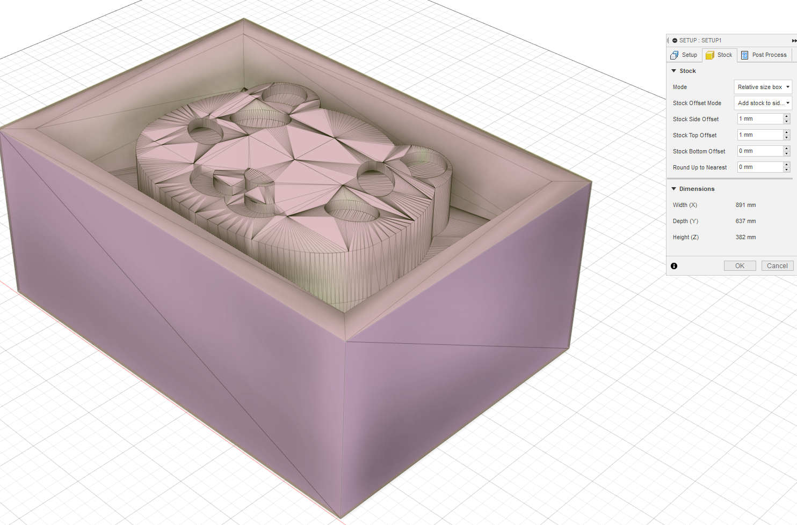
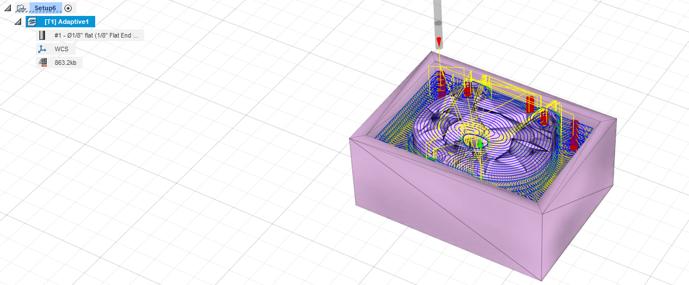
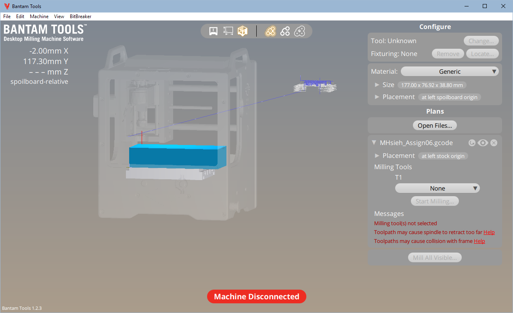
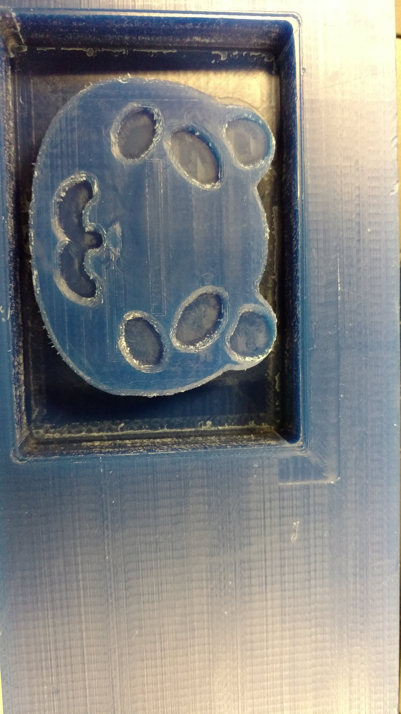
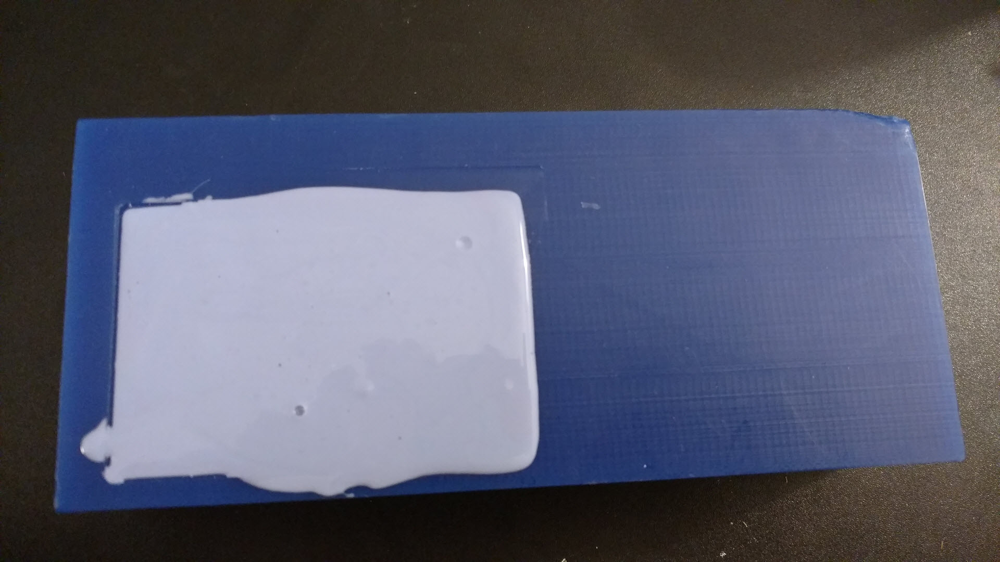
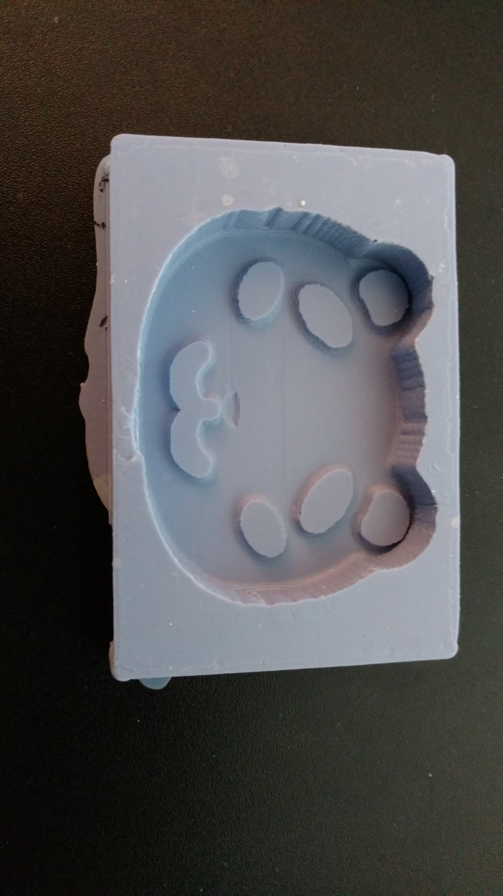
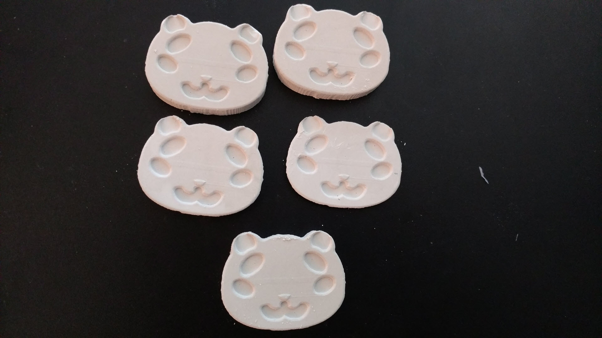

For this assignment, we were asked to design and fabricate a mold using silicone then use that mold to cast at least 4 identical parts (with plaster being a suggested option). The master for the silicone mold should be have been designed in CAD first, then fabricated using CNC milling or 3D-printing. I ended up CNC milling and machineable wax. The mold design was created in Onshape before exporting as an .STL to Fusion 360 to generate toolpaths and Gerber code for use in Bantam Tools/Othermill. Ultimately, the machineable wax was cut using a separate toolpath generated with Shopbot software with Nadya's assistance. The Onshape source part is saved to the cloud and available for public viewing in my Onshape document. Additional source files for CNC processing can be found within my github repository.
The general steps that I took in this assignment were:I decided to create the solid for the master part, rather than downloading a .STL that someone else had created, so I began by measuring the machineable wax and inputting those as variables in Onshape. I figured that I could probably form 4 molds out of the size of the machineable wax, so I adjusted the margins to account for this. In order to save time when milling happened, I chose not to cut too deep into my material. I initially wanted to create a spherical head for my panda face/head, but discovered that Onshape did not allow sketching on spherical surfaces (which I guess kind of makes sense, honestly), so I would be unable to sketch facial features after revolving half an ellipse to create the head shape. I changed my plans at this point to create a flat face, similar to a cookie mold. After finishing with the master part, I exported the part as an .STL based on the settings in the image below. I had to come back multiple times to re-export the .STL after minor changes (including switching the sketch plane of the part to top, instead of front so less work was required in Fusion 360, simplifying the part to a single cutout, rather than from the complete machineable wax block)
I opened the .STL in Fusion 360, switched to Manufacture mode and began setting up the file to generate a toolpath for milling. In the Setup menu, the WCS needed to be set on the block and then Stock needed to be reduced, so that there wasn't additional material around the master. I also discovered at this point that the model was 10 times larger than it should have been, so I had to scale down to get an accurate toolpath generated.
After setting up, I created a 3D toolpath using adaptive clearing. The important setting here was Maximimum Rough Stepdown in the Passes tab, which should be set based on the end mill's specifications. Once this toolpath was generated, I exported the Gerber code using Actions > Post Process.
I opened the Bantam Tools software and loaded the .gbr file that had been produced. Bantam Tools prompted me to select how the file was applied and I selected it for the Outline in addition to the top. The preview of my parts was loaded into the software and I configured the material/locations and end mill for how I wanted to mill. Based on the Fusion 360 export, the toolpath placement had to be significantly adjusted.
Ultimately, all of this work was moot, because Nadya helped me mill off the original .STL file and used ShopBot, rather than Bantam.
For machineable wax, it is important to ensure that the block is well attached to the platform on which you are performing milling with. This can be done using hot glue around the base of the block. For ShopBot, the wax was attached to a wooden board, which was clamped to the ShopBot bed. If this were to be done in an Othermill, I could've glued the wax directly to the platform. After the milling was done, the wax could be removed by chiseling at the hot glue, but alcohol could also have helped, but it wasn't necessary.
I used the Oomoo mix to create the silicone mold. The process was fairly simple, with two separate bottles which were to be mixed in a 1-1 volume. I filled my master with water to determine the liquid volume that would be required to fill it and determined it to be ~30 mL. I poured out 15 mL of Silicone Part A and 15 mL of Silicone Part B and began vigorously mixing with a chopstick. I knew that I needed to pour the silicone within ~7 minutes, so I made sure that it was mixed well as quickly as possible. Because of the difference in colors, it was easy to determine that it was well-mixed once the mixture was purple, rather than pink/blue. I left the silicone to cure overnight and woke up to a completed mold. I removed the silicone from the master by picking at the edges, but was careful given the thinness at the upper edge of my master. No additional tools were required.
The casting using plaster was very similar to the silicone process. I didn't have the instruments to accurately measure plaster based on its required mix ratio (100 plaster:22 water), but eyeballed the amounts and mixed vigorously. I had fairly consistent parts come out after sitting in the mold for ~25 minutes. My first cast had some issues though and was significantly smaller than the others, because I reversed the ratios. Although it wasn't necessary, I baked the parts at 200F to further dry them out, since my water ratio was probably slightly higher than 22. There were some issues with the ear portion of the cast, which I imagine is due to the very thin gap, though the resolution overall came out very well. (I also dropped a few of the pieces, resulting in some chipping here).
